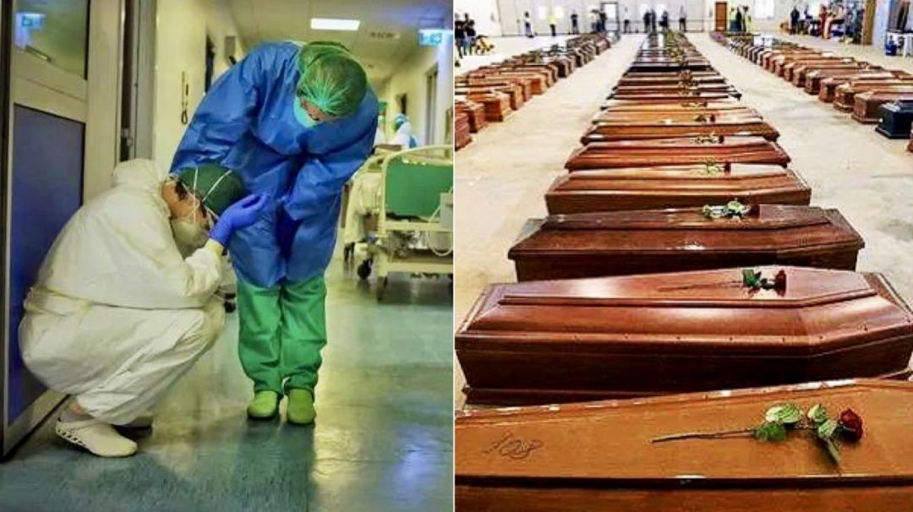

意大利累计确诊655例！疫情蔓延至13个大区，经济受到严重冲击
原文链接 备份链接 近期，多国新冠肺炎感染者数量持续攀升。截至目前，意大利累计死亡患者人数已经达到17人，确诊病例增至655例，疫情蔓延至意大利13个大区。 而作为当前受新冠肺炎疫情影响最严重的欧洲国家，意大利的多项经济活动正在经受冲击。 …

一位意大利专家在接受美国媒体采访时说了一段话，大意是：在中国疫情暴发之前，病毒或已在意大利传播。这个新闻被国内媒体二次报道后，引发全网热议。有不少网友留言指出，这或许代表新冠病毒的源头不是武汉，而是另有他地。
为核实该内容，DeepTech 专门联系了这位专家——朱塞佩 · 雷穆齐（Giuseppe Remuzzi）教授。他是意大利知名医学机构马里奥 · 内格里药理研究所（Istituto di Ricerche Farmacologiche Mario Negri, IRCCS）的主任。
朱塞佩 · 雷穆齐是全球肾脏病学的权威，在 2006 年受邀成为意大利卫生部的高级顾问，同时他在包括《新英格兰医学杂志》在内的众多医学期刊的编委会任职，也是《柳叶刀》国际咨询委员会的成员。
 图 | 朱塞佩 · 雷穆齐（Giuseppe Remuzzi）教授（来源：EPO）
图 | 朱塞佩 · 雷穆齐（Giuseppe Remuzzi）教授（来源：EPO）
详解更早期可疑病例

对于报道是否真实的询问，朱塞佩 · 雷穆齐对 DeepTech 表示，这是根据他在 3 月 19 日接受美国国家公共电台（NPR）采访时的一句话转述的——“他们（医生）记得曾看到过非常奇怪的肺炎，也很严重，尤其是在去年 12 月，甚至更早在 11 月的老年患者当中。这意味着，至少在意大利伦巴第大区的北部以及我们意识到中国疫情暴发之前，这种病毒或许已在传播中。”
他在被问到“意大利为何在疫情暴发后表现得措手不及”时，作出这一表述。
对此，朱塞佩 · 雷穆齐向 DeepTech 强调，他并不是在谈论 “新冠病毒的源头在何处”，而是根据此前发表在各大期刊的科学论文内容，对外表达了“病毒在被发现前可能已经在传播” 的观点。
而对于更早期的肺炎病例，“我没有这方面的科学证据。”他随即强调道，“这些都来自少数人的传言，以及一些医生的印象。但他们还没有明确向我证实过在 1 月份之前有见过双侧肺炎。”
接着，朱塞佩 · 雷穆齐向 DeepTech 详细介绍了他所了解的更早时间的具体病例情况：
最早有 1 例在意大利 Alzano Lombardo 医院（位于伦巴第大区的一个城市）确诊为 “双侧性间质性肺炎” 的病例，但当地医生不清楚该病患是否由新冠病毒引发，因为在当时还无法进行检测；
在 2019 年 12 月，有 2 例肺炎病例于伦巴第大区下属城镇 Scanzorosciate 被确诊，其症状伴有高烧、咳嗽，以及呼吸困难，当时的全科医生认为这很不寻常；
在 2019 年 11 月下旬到 12 月，还确诊出 10 例异于常态的双侧肺炎，分别在意大利伦巴第大区下属城镇 Gera D’Adda 和 Crema。这 10 例肺炎再次出现了高烧、咳嗽、乏力和呼吸困难等症状。这些患者当时并没有做 X 光检查；部分病人服用了两个疗程的抗生素，还有部分甚至服用了三个疗程，最后他们都在 15 天内康复了。
朱塞佩 · 雷穆齐表示，这些并不是指向 COVID-19 的证据。但可以发现，尤其是最后的事件，这是医生认为与常见肺炎不同的 10 例 “例外” 病患。而且这些双侧肺炎病例也并非感染了季节性流感，因为所有的患者都接种过流感疫苗。
除此之外，他还表示收到过来自威尔士（英国的政治实体之一）的患者来信。不过，朱塞佩不便透露信件内容，因为都是病人秘密写给他的信。但有病人声称在 2019 年 11 月生病时，临床上就出现了疑似 COVID-19 的病例。
 图 | 马里奥 · 内格里药理研究所（来源：IRCCS）
图 | 马里奥 · 内格里药理研究所（来源：IRCCS）
在介绍完上述内容之后，朱塞佩 · 雷穆齐再次强调：“我重复一遍，因为在当时还没有新冠病毒存在的证据，所以这些病例都没有被记录为 COVID-19。”
“目前从科学角度来看，我们可以判断新冠病毒首先在武汉被发现。”他说，“在中国公开之前，它可能已经在武汉传播了一段时间，从遗传学角度可以准确地证实这一点。通过《新英格兰杂志》的论文（DOI: 10.1056/NEJMc2001468）可以发现，该病毒是通过一位与中国人有过接触的德国人到达意大利的。”
他还表示，3 月 17 日在《自然 · 医学》杂志上的一篇文章（https://doi.org/10.1038/s41591-020-0820-9）显示了新型冠状病毒是来自蝙蝠和穿山甲的有力证据，文中披露了几乎相同的基因序列。而同时，买卖蝙蝠和穿山甲这类商业活动在武汉的市场上也有所记录，所以成为了最初疫情“暴发的源头”。
“当下的问题是，在卫生部门认识到问题的严重性之前，这种病毒在中国传播了多久。”朱塞佩 · 雷穆齐说道，“考虑到新冠病毒的潜伏期长度，如果有携带病毒的无症状患者在 12 月甚至更早的时间在中国各地移动，或者出国旅行。对此我也不会感到惊讶。”
总而言之，在他看来，根据《自然 · 医学》杂志上发表的基因研究，这种病毒是从中国传到意大利的。但是，他也补充道：人们也必须要考虑其他可能。其中一种可能就是，在中国意识到新冠病毒的严重性之前，考虑到无症状携带者的数量，病毒可能在更早的时间就已经处于扩散之中。3 月 16 日《科学》杂志上发表的一篇文章讨论了大量无症状感染者可促进新型冠状病毒的快速传播。（DOI:10.1126/science.abb3221）
而对于另外的可能——新型冠状病毒的源头并非在武汉，他表示可以考虑这种可能性，但目前来看缺乏明确的科学证据。
图 | 意大利超负荷的医护人员与可怕的死亡人数；据俄罗斯媒体报道，意大利的火葬场已经没有容纳更多遗体的空间，其中一些不得不考虑停止接收遗体（来源：Twitter）
此外，朱塞佩 · 雷穆齐还对 DeepTech 讲了当下意大利疫情的严重程度。
3 月 12 日，他在《柳叶刀》上发表了名为 “COVID-19 和意大利：接下来会怎样？” 的文章，而这篇文章也成为《柳叶刀》主编、英国皇家内科医学院和医学科学院院士理查德 · 霍顿 （Richard Horton）的关键论据，他据此批评英国政府当时所采取的防控行动不力。
朱塞佩在文中表示，自 2 月 21 日以来，意大利的感染人数就呈指数趋势上升。在意大利，重症监护病房一共有大约 5,200 个床位。截至 3 月 11 日，已有 1,028 个床位被新冠肺炎患者使用。而这一数字还在不断增加，到 3 月中旬意大利的重症监护病房已经达到最大容量。在当时，他呼吁意大利当局和卫生部门要分配足够的资源，包括人员、床位和重症监护设施等，以便在未来几天或几周内控制局势。
他在文中写道：如果意大利的疫情发展趋势与中国湖北省类似，在控制措施实施的 3~4 天内新增感染人数可能会开始下降，逐步偏离指数趋势。然而，由于隔离措施的实施程度，以及与中国在快速建设专用设施的能力之间存在差异，他认为这一点无法准确预测。而当下意大利的新增确诊数据也确实超出了他的推断。
根据上报数据显示，意大利在周一（3 月 23 日）单日因新冠肺炎新增死亡 602 人，总死亡人数已达 6,077 人。相比于上周六的最高水平（新增死亡 793 人）已有连续两天的下降。周一新增确诊病例 4,789 例，目前意大利累计确诊病例为 63,927 例，粗病死率已高达 9.5%。
当下，意大利的医护人员已在超负荷地长时间工作。他表示，目前连皮肤病医生、眼科医生，以及病理学等方向的医生，都在接受培训，以便能照顾那些需要使用呼吸机的病患。不少意大利重灾区的普通医院现在都已被改造为新冠肺炎专门医院，并配有受过专门培训的医生和护士。
自 1978 年以来，意大利一直在遵循国家卫生系统（Servizio Sanitario Nazionale）来运行。该系统在 1992~1993 年期间进行了重新设置，其原则和组织参考英国的国民健康服务模式，基于三个基本原则：第一个是普遍性，即所有公民都有平等的权利获得国家卫生系统提供的服务；第二个是团结，即每个公民都将根据自己的收入，通过累进税为国家医疗服务提供资金；第三个则是统一，即国家卫生服务体系向所有地区的所有公民提供的服务质量必须是统一的。
此次疫情让意大利医疗系统面临极大挑战，以致有的重症监护人员要考虑放弃一部分最危重病人的救治，把救治机会留给生存几率更大的病人。意大利生物伦理委员会现任主席批评了这种态度，并发布声明称，“宪法承认每个人都有权获得一切必要的健康护理”。
朱塞佩 · 雷穆齐认为这种批评有些偏颇。“那是他们没有意识到重症监护病房已经挤满了病人，并且意大利感染新冠病毒的医护人员已占疫情地区医疗队伍的 8.3%，伦巴第大区甚至已经达到了 20%。”他说，“我们的医生和护士是当代的英雄，他们在一场意想不到的战争中对抗一个强大的敌人。”
意大利的医护人员现已别无选择，将不得不遵循与战争时期相似的卫生保健规则——选择谁生？谁死？
-End-
参考：
https://www.nejm.org/doi/full/10.1056/NEJMc2001468
https://www.nature.com/articles/s41591-020-0820-9
https://science.sciencemag.org/content/early/2020/03/13/science.abb3221.abstract
https://eatris.eu/institutes/mario-negri-institute/
https://www.marionegri.it/eng/giuseppe-remuzzi-bio
https://en.wikipedia.org/wiki/Mario_Negri_Institute_for_Pharmacological_Research

原文链接 备份链接 近期，多国新冠肺炎感染者数量持续攀升。截至目前，意大利累计死亡患者人数已经达到17人，确诊病例增至655例，疫情蔓延至意大利13个大区。 而作为当前受新冠肺炎疫情影响最严重的欧洲国家，意大利的多项经济活动正在经受冲击。 …
原文链接 备份链接 “考虑到潜伏期，无症状患者在12月甚至更早的时候可能就已经在中国境内和境外旅行了。” 朱塞佩·雷穆齐 记者 | 王磬 近日，一位意大利医学家的观点引起了公众关注。这位名为朱塞佩·雷穆齐（Giuseppe …
原文链接 备份链接 截至北京时间3月22日12时，除中国外，184个国家和地区累计确诊222707例新冠肺炎，“钻石公主”号邮轮712例。 当前，欧美疫情仍旧快速蔓延。其中，意大利病例突破5万例，总理孔特要求全国停止所有非必要的生产活 …
原文链接 备份链接 图片来源：TRT WORLD 记者：肖恩 “ 叙利亚是中东/北非仅剩的三个未报告新冠病毒确诊病例的国家之一，另外两个是同样受到战火摧残的利比亚和也门。这些地区无异于“定时炸弹”。 ” 如何预防新冠病毒？各国卫生部门给出 …
原文链接 备份链接 据世卫组织新冠肺炎情况报告，截至欧洲中部时间7日10时(北京时间7日17时)，中国境外新冠肺炎确诊病例数达到21110例，死亡413例。其中，从3月7日零时至8日零时，意大利新冠肺炎确诊病例新增1332例，累计确诊病例 …